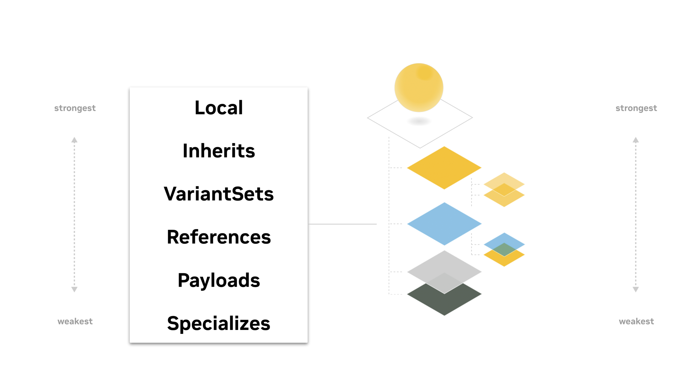

Composition Arcs and Strength Ordering#
What is Strength Ordering?#
Now let’s jump into strength ordering. Before we begin, it’s important to note that strength ordering is a complex concept, one that will take further study and hands-on practice to fully comprehend. However, it’s something we need to be aware of as we work with OpenUSD scenes, so we’ll introduce the concept in this lesson.
Strength ordering governs how opinions and namespaces from multiple layers (or scene sub-hierarchies) are combined, and how conflicts are resolved during scene composition. From the composition, the opinions will be ordered based on their strength and the strongest opinion will take priority.
Strength ordering is the ordered list of composition arcs that determines the precedence of data during composition. When conflicting opinions (data values) exist across layers, the stronger layer’s opinion takes precedence, allowing for non-destructive overrides and layering of scene data.
How Does It Work?#
During scene composition, USD’s composition engine builds a graph of the layers in the specified strength order. That order is affectionately referred to as the acronym LIVRPS, which stands for the list of composition operations, ordered from strongest to weakest: local, inherits, variant sets, references, payloads, and specializes.
Let’s review these terms from strongest to weakest.
Local#
First, local. The algorithm iterates through the local opinions. Local opinions are any opinion authored directly on a layer or a sublayer of a layer, without any additional composition.
Inherits#
Second, it looks for any inherits arcs in the scenegraph. Inherits allows opinions authored on one source prim in the scenegraph to affect all prims in the scenegraph that author an inherits arc to that source prim. In this way, for example, you can make changes to all pine trees in a forest without changing the source of the pine tree itself.
Variant Sets#
Third, variant sets. Variant sets, as the name implies, defines one or more scenegraph hierarchies for a prim (called variants), and composes one of them. In this way, for example, an object can have multiple geometric representations.
References and Payloads#
The next strongest opinions are references, and then payloads. References compose the contents of a separate layer as a scenegraph. Payloads are similar, but have the ability to load or unload the layer from the stage at runtime. A typical use of references and payloads would be to modularly bring assets into a scene (e.g. furniture in a room).
Specializes#
Finally, we have specializes. Specializes is essentially authoring a new fallback value for a property; so if all the other compositional choices result in no value, the specializes value will win. This is commonly used with material libraries - for example, a basic Plastic material may be specialized by a RoughPlastic material which reduces the value on the glossiness property. Any subsequent opinion on the RoughPlastic material will take precedence, because specializes is the weakest composition arc.
For each prim and property, the engine evaluates the opinions from the layers according to LIVRPS, giving precedence to the stronger layer’s opinion when conflicts arise. Stronger layers can override or add to the data defined in weaker layers, enabling non-destructive editing and overrides. LIVRPS is applied recursively - for example, when composing a reference, local opinions within the reference are strongest, followed by inherits, followed by variant sets, etc.
The final composed scene, what we refer to as the USD stage, represents the combined data from all layers, with conflicts resolved according to the strength ordering.

Key Takeaways#
Composition is one of the powers of OpenUSD, and when used properly we can leverage it to enable non-destructive editing by using stronger opinions to intentionally override weaker ones, without having to modify the original data. It can also be used to structure scene data for efficient loading and instancing, leveraging payloads and references.
When understood and used properly, it provides a clear and predictable way to combine data from multiple sources, enabling efficient collaboration and scene management. We’ll cover this concept again in more depth in later lessons.